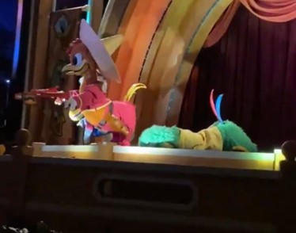
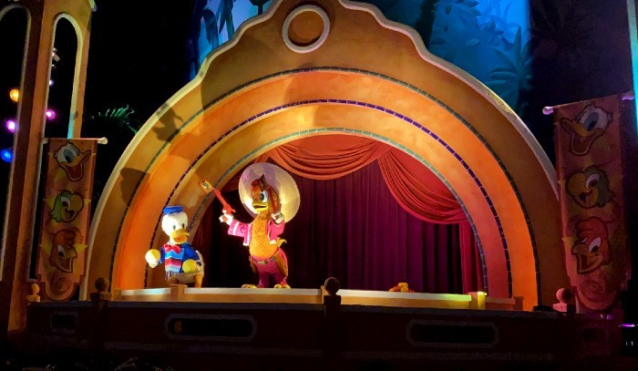
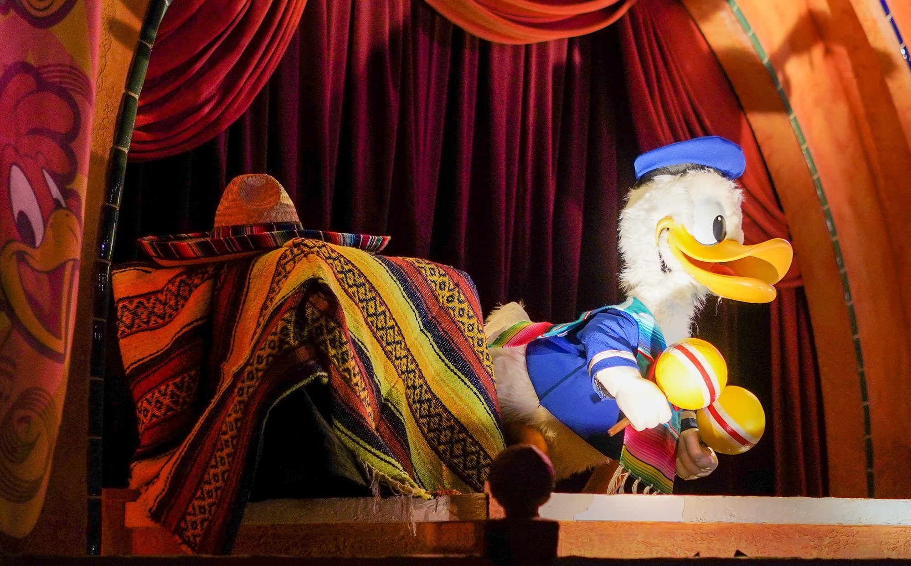
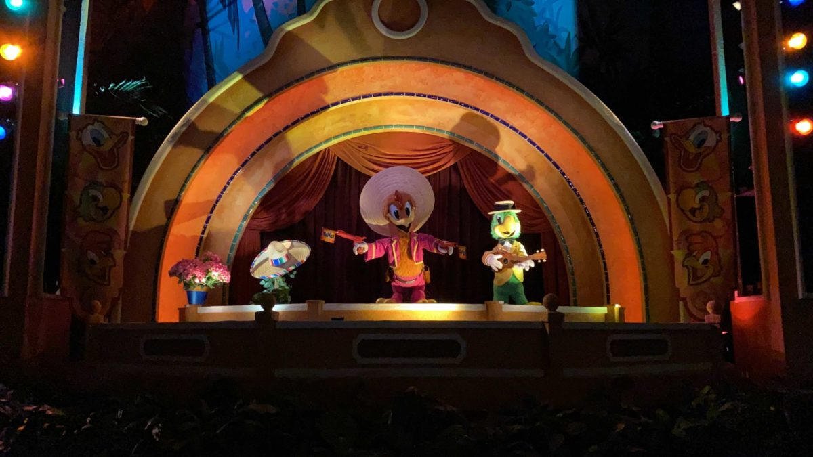
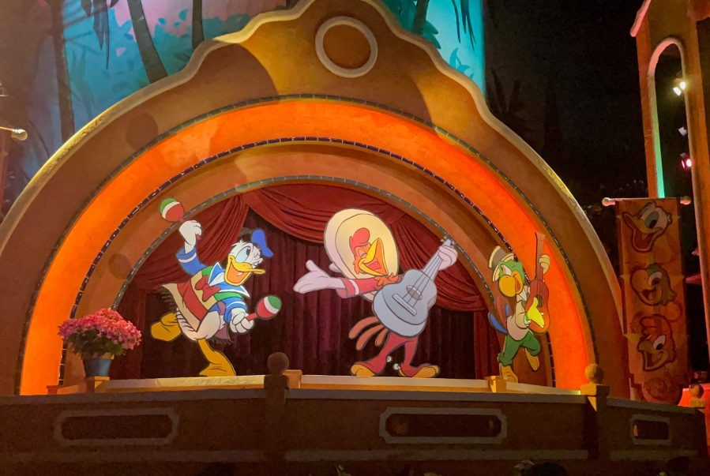

Gran Fiesta Tour: Starring The Three Caballeros is a charming boat-ride attraction in the Mexico Pavilion at EPCOT. Throughout the attraction, guests are faced with screens, showing the adventure of the Three Caballeros through Mexico as they prepare for their Fiesta show. The ride revolves around Panchito and Jose looking for Donald Duck, who has bailed on the show to go on vacation on the beautiful Mexican beaches. At the end of the ride, the audience gets to see the Gran Fiesta, which features the Three Caballeros singing their signature song while fireworks go off above. This ride is especially interesting because it is now home to some of the oldest animatronics still in use. The Three Caballeros animatronics were built in 1969, making them 52 years old, and have been on two continents. Unfortunately though, since the figures are now so old, they are very prone to technical difficulties, and sometimes take weeks to fix.
"he is taking a siesta"  One incident dating back to July 2020, resulted in Jose's leg joints malfunctioning, leading him to fall facedown onstage. The rest of his body twitched as he sang, since only his legs appeared to stop working. The next day, Jose had been mercifully removed from his post, and a maintence worker with a sense of humor placed marigolds in his spot as a makeshift burial for the missing animatronic. Perhaps the creepiest part of this incident however,  is the voice of Jose was still audible, making him appear to be singing from beyond the grave. After a few weeks, Jose had returned, seemingly back to normal, with new feathers and paint on his face, so it seemed the scene was back to normal.
 It seemed that the animatronics were fine again after Jose's issues, but imagineers were mistaken. In january 2021, another bird begain to have similar issues to Jose. During a ride, Donald Duck slowly began tipping sideways. Maintence workers quickly noticed and closed the ride, going in to make a temporary fix. They decided to get a large box, covered it with a colorful blanket, and placed it next to Donald, allowing him to lean on it and still preform without falling over. The next day however, Donald was missing, replaced with yet another burial. This time, there was a pot of pink flowers next to his position, and where he usually stands, there was a vine holding a sombrero, as a sort of placeholder for the struggling duck.  While Jose was returned quickly, Donald's issues were not as easily fixed. Imagineers determined there was something wrong with the wiring in the stage where the animatronics perform, causing them to malfunction. To fix this, all three birds needed to be removed, so much to the dismay of fans, on February 2, 2021, all three characters were replaced by character cutouts.
 Since the issue the animatronics are facing is not too difficult or expensive to fix (as it is easily reached and is not too complex of an issue), Walt Disney Imagineering released that the animatronics should be back "sometime this Spring." This is a good sign for the half-century-old figures, as the issues were not so complex that it would put them out of service for good. Hopefully the employees will fix the problem soon, so the singing birds can get back to the show replace to unimpressive cutout replacements.